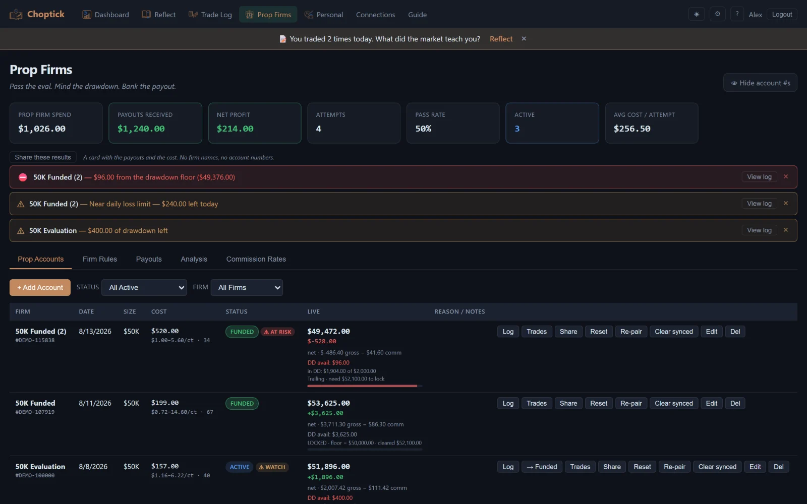
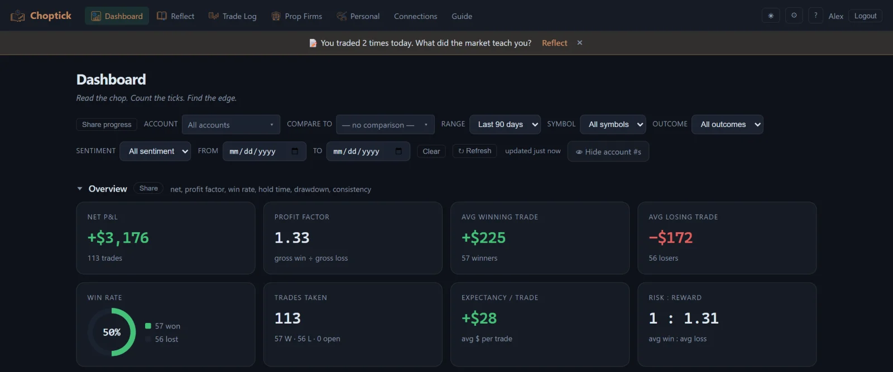
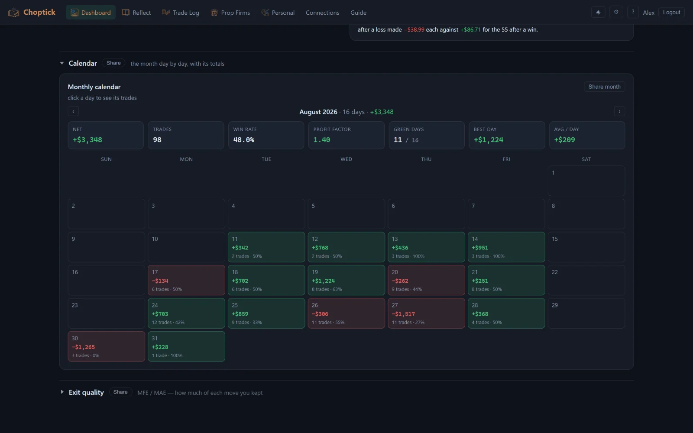
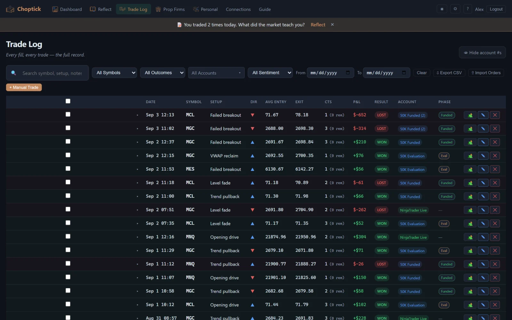
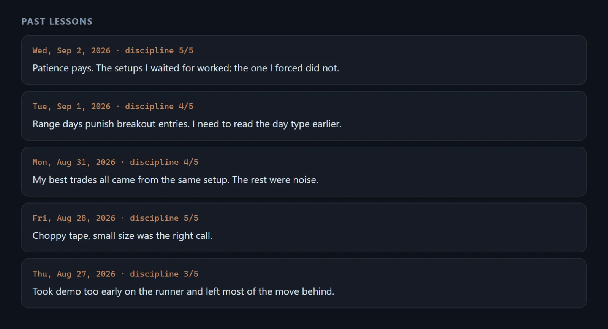

Choptick · web app
Read the chop. Count the ticks. Find the edge.
Choptick is a trading journal built for futures and prop-firm traders. Fills log themselves from NinjaTrader or TradingView, prop-firm rules are tracked live against real trades rather than a spreadsheet, and the daily reflection is part of the product rather than a notes field nobody fills in.
Go to choptick.appInside Choptick





Ad creative — in testing
Draft banners for Choptick, put here to be looked at before they are put anywhere that costs money. No prop firm is named — accounts are labelled by size and phase, which is how traders talk anyway — and every figure is invented, on a demo profile built for the purpose. The product surfaces themselves are reproduced faithfully.
Where things live
The product, and everything about it: choptick.app — including its own privacy policy and terms, which are the ones that govern Choptick. The Innovizea app privacy policy on this site covers our games and does not apply to Choptick.
Where it runs: Choptick is a web app — it works in a desktop or phone browser, and adds to a phone home screen. The Android and iOS apps are still in testing — email us if you want in.
Account deletion: choptick.app/delete-account.
Support: support@innovizea.com.
Choptick is a journal, not a broker. It holds no funds, places no orders, and nothing in it is financial advice.